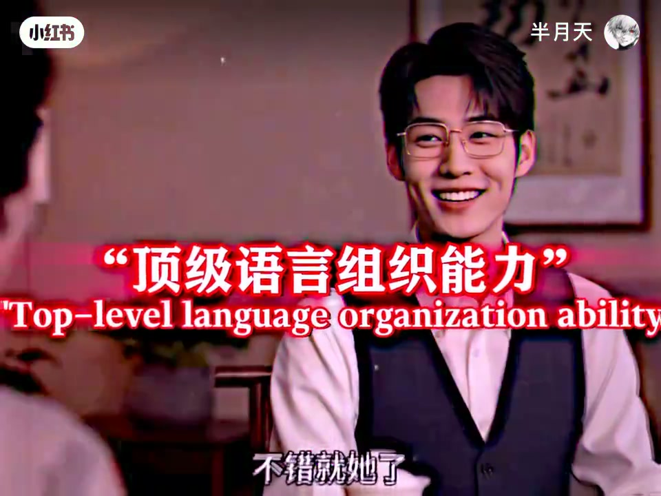

w33.meta.json 标题重建；文末仍完整保留 Whisper 原始分段作证据。内容要点
知识结构
女方先报「我是酒吧里跳舞的」「我爸在坐牢」「我妈在ICU」；媒婆同步推销「他是985的」「他爸在政法单位」——同一句式，相反价签。
女方加「刚从缅甸回来」「离了四次婚」「那怎么了」；媒婆补「还是个留学生呢」「书香门第」，并插入夸张震惊「什么」。
女方再抛通缉与「踩了两年缝纫机」；媒婆改口「之前追她的人都有编制」「御姐纯欲风」；男方「不错就她了」，叠标题「顶级语言组织能力」。
笑话不在信息本身，而在同构包装：把不利事实塞进与精英履历相同的短句模具，再换一个好听的风格词，交易就能闭环。
图文实录
对仗开场：酒吧舞者 vs 985
开场几乎没有铺垫。沙发上的年轻女性直白自报：「我是酒吧里跳舞的」。镜头立刻切到茶桌对面的媒婆（旗袍、珍珠项链），对着戴眼镜的年轻男子热情推销：「他是985的」。两条线用同一语法槽位「我是 / 他是 + 身份标签」起手，却一个往「边缘职业」走，一个往「名校履历」走。
对仗立刻加深一层家庭背景：女方说「我爸在坐牢」，媒婆说「他爸在政法单位」；女方再补「我妈在ICU」。短短几秒里，家庭叙事也被塞进同一模具——一边是体制与公职光环，一边是牢狱与重症病房。
升级堆叠：离婚四次遇上留学生
女方继续加码：「我刚从缅甸回来」「我离了四次婚」。媒婆一侧则抛出「还是个留学生呢」，并在听到离婚次数时做出夸张的「什么」反应；女方淡然回「四次」「那怎么了」。两边仍是短句连发，像在比谁的标签堆得更快。
媒婆并未停手，继续用「书香门第」把男方家庭抬到文化象征层。到这里，观众已经能感到结构：信息可以截然相反，句式必须整齐划一——这正是后面「语言组织能力」玩笑的伏笔。
改写收官：通缉史变「御姐纯欲风」
女方把底牌翻到更刺眼：「我之前还被通缉过」「刚踩了两年缝纫机出来」（口语里「踩缝纫机」常作服刑的委婉说法），甚至补一句「我还有糖尿病」。媒婆这时不再正面否认，而是换轨包装：先说「之前追她的人都有编制」，再用当下流行的审美标签盖章——「御姐纯欲风」。
年轻男子听完微笑点头：「不错就她了」。画面中央叠出大红标题「顶级语言组织能力 / Top-level language organization ability」——把整段对仗推销与改写术，收束成一句戏谑评价。视频未交代真实相亲结果是否可信，也未给出现实建议；它展示的是影视喜剧里的语言把戏：同构句式 + 审美改写，足以让交易叙事闭环。
